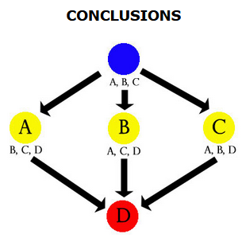
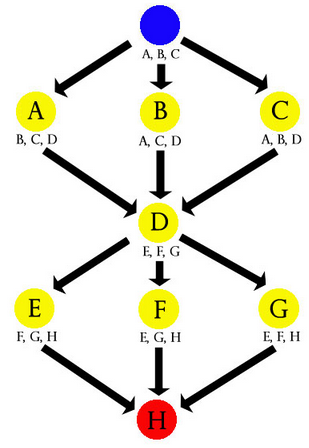
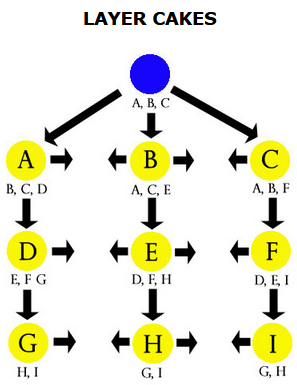
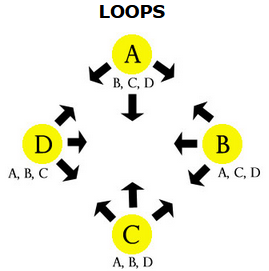
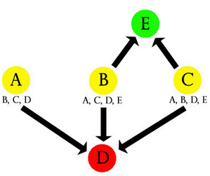

Three Clue Rule
The Three Clue Rule
For any conclusion you want the PCs to make, include at least three clues.
The Inverse of the Three Clue Rule
If the PCs have access to ANY three clues, they will reach at least ONE conclusion.
Basic 5 Node Mystery
It’s the simplest possible, a single Conclusions structure with 3 nodes.
Step 1: Scenario Concept
What is the general pitch of the mystery? Who did it? Why? Someone murdered? Something stolen or destroyed?
From Unchained Mysteries
This is the Step 1 The Spark
Step 2: The Hook
How are the PCs involved? Witnesses? Formally invited? Stumble upon a crime scene? Someone involves them?
From Unchained Mysteries
This is the Beginning
Step 3: The Ending
What’s the conclusion? Where do they learn the final answer and/or the final big fight with the BBEG? This is the last scene of the scenario/adventure.
From Unchained Mysteries
This is the Ending
Step 4: Nodes
- Brainstorm cool locations and people related to the mystery.
- Aim for 3 Investigation scenes + Hook scene + Ending scene to have a 5 Node Mystery. Usually good for a single session of play.
- Brainstorm more than 3 Investigation scenes, then pick the best 3. Can the leftover be merged into the best 3 to make them better?
- If you plan on having social only scenes (talking with a single NPCs only), count them as half scene for the 5 scene quota. They are usually shorter.
From Unchained Mysteries
This is the Middle
Step 5: Proactive Element
It’s a bonus scene that can be triggered at any time and reaches the PCs proactively.
- Useful to bring the investigation back on track
- Or, add more content if PCs are going too fast
Two main options:
- The bad guy discovers being investigated by PCs and tries to block/kill them
- The next step of the bad guy plan happens (and PCs learn of it)
These proactive scenes should have multiple leads and clues inside, so they can be useful regardless of the point where the PCs are in the mystery graph.
From Unchained Mysteries
This is SIMILAR to the Tripwires
Adding Dungeons, Heists or Raids
A location of the mystery might be a Micro-dungeon. Multiple scenes happen there, with the three clues for 1 or more conclusions found in different rooms. Same can be done with Raids or Heists
Step 6: Connect them with clues
We need to connect the 5 scenes together like in a Conclusion type structure. In each scene, add 3 clues pointing to the other.
A Revelation List is useful to get started. Use Making Clues for inspiration.
- List each investigation scene
- For each scene, list the 3+ clues that are needed to reach the same conclusions.
My experience
After trying building one mystery, I think starting with a list of revelations/conclusions (not a Revelation List) that compose the mystery and the Spark Event (Unchained Mysteries vocabulary), make a Clue List, listing all scenes and sprinkling clues for each revelation there. This also negates the need for a Revelation List, but maybe it can be useful to build one to check while running.
Step 7: Ancillary Revelations
There are some conclusions that are not strictly needed for the investigations and will not lead to new scenes. They can still give an advantage to PCs, like preparing themselves better to a future situation. These are also smaller, side enigmas that give more flesh to the world.
Step 8: Flesh out your Scenes
Look at the defined scenes and add detail. If the scene is a location, not different from a dungeon key description. They don’t need to be single locations. Might be a group of locations together (example: a bar with the manager’s office on the back) or an entire dungeon.
- Descriptions of the location or the NPC
- Important elements (clues)
Prepping Scenes vs Running Scenes
Keep elements of the scene you prep as a toybox of tools you need for that scene, but do not script how they are used. PCs can approach a scene in many different ways, so keep it loose, a bit like LazyDM.
Like in Lazy DM
Some parallels with Lazy DM. You would prep for each scene a series of clues (Secrets and Clues step of Lazy DM) and a list of potential scene (Potential Scenes and/or Define Monsters steps of Lazy DM)
Step 9: Running the Mystery
You can use the Revelation List as a checklist, to be crossed out when the PCs reach a conclusion and tracking all found clues.
If a conclusion is at risk because the PCs haven’t found most of the clues, you will see it immediately and keep an eye on the last clue. (my addition: just remove any DC or barrier to finding it, so it’s guaranteed that the last one is found. Changing a bit the clue to fix it, like OSR does to skip checks if PCs think abut doing the right investigation approach but are unlucky.)
5 x 5 Campaign
To have different scenarios
Step 1: Design five 5 Node Mysteries
Create them independently, ideas will come naturally on how to connect them.
Step 2: Connect each Scenario as a Node
Arrange the five Basic 5 Node Mysteries into a Conclusions pattern. The clues to other Mysteries should be scattered throughout the whole Mystery currently played. Can be a reward to finish it, can be during investigation, can be in the hook.
PCs might not finish a mystery while starting another, it’s fine. They will get back to it. For a D&D campaign, a 5x5 Campaign should be ideal for a whole Tier of play. It would technically be a Funnels with 4 Conclusions inside.
Expanding it
Instead of using Conclusions patterns, you can insert other things or go with a Node Cloud without a clear structure. Also different types of scenarios can work as well.
Node types
Node definition
Something from which a clue can be gathered.
These are Conclusions that PCs need to reach. Either as Leads to a location or as a clue to a different type. Each Node/scenario can be:
- Locations
- Gives clues by being explored.
- Person
- Gives clues by observing them or questioning them.
- Organizations (also People + Locations)
- Gives clues about other nodes usually, similar to People, but in more indirect ways. Can be official or unofficial.
- Events
- Something that happens at a specific time and usually a specific place. Can be something to prevent happening or something to attend.
- Activities
- Something the PCs are supposed to do in order to gain 1+ clues.
- Thing (my addition)
- Something useful or needed. Usually included in Activities, Events or Dungeon/Heist/Raids nodes.
- Any of Dungeon/Heist/Raid scenarios (Fractal nodes)
- Proactive
- They come to the PCs.
- Useful as backup to give more clues
- Reactions to PCs actions, from People or Organizations.
- They can be Events if they are aimed at the PCs specifically.
Non-linear node structures
Conclusions
 1 Hook scene + 3 (or more) Investigation scene + 1 Conclusion scene. Ideal for 5 Scene Mysteries while keeping them flexible. You can have more than 3 Investigation scenes!
Funnels
 A series of Conclusions with chokepoints to control the flow (and guaranteeing that some conclusions are reached). Each layer is a free-form investigation sandbox that leads forward gently. Ideal for classic D&D campaigns, where each layer is for a Tier of play, avoiding PCs skipping to too-high CR enemies. PCs will unlikely go back to before the
Layer Cakes
 Similar to Funnels, but more gentle in driving forward the story. Each node in Layer X has a clue to other nodes on Layer X and ONE clue to Layer X+1. Exploring completely Layer X will give 1 clue for each node in Layer X+1, satisfying the Inverted Three Clue Rule. PCs will probably go back and forth the layers.
Loops
 All nodes have clues pointing to each other. Ideal to have multiple entrances (i.e. Hooks). Maybe scattered around different places in a hexcrawl?
Dead Ends
 E here is a dead end. Has no clues inside of him, but can be useful as optional, bonus content that can give an edge later on. Extra treasure? Tactical info? The leads pointing to E are bonus clues and don’t count for the 3 clues quota. E doesn’t need to have clues, but it might. They still remain extra though.
Node Cloud
With time, instead of structuring things like before, you will end up with nodes without a structure, but following both rules. This is fine, leaving the PCs with a sandbox to navigate. Like a region with different ruins to explore, each has clues pointing to the others, but no order is enforced for each of them.
How to organize nodes for play
No need to draw nodes and connections. Use the following:
Clue List
A Clue List is a list of all the clues inside a node. Useful while prepping the scenario.
Example for a Werewolf killer scenario Clue List:
Note
From https://thealexandrian.net/wordpress/1118/roleplaying-games/three-clue-rule. Clue list generated by me based on random scenes.
- Scene 1: Crime Scene
- Over-sized claw marks on the victims (He’s a Werewolf)
- Pictures of the same guy on a victim (He’s a former lover)
- A broken crate reading DANNER’S MEATS at one of the crime scenes (Check out the Butcher Shop)
- Scene 2: Home of Victim 1
- Tracks that turn from wolf paw prints to human footprints (He’s a Werewolf)
- Love letters written by the same guy (He’s a former lover)
- Pictures of the same guy kept in their houses somewhere (He’s a former lover)
- A note saying “meet me at the butcher shop” crumpled up and thrown in a wastepaper basket (Check out the Butcher Shop)
- Scene 3: Home of Victim 2
- One of the victims owned a handgun loaded with silver bullets (He’s a Werewolf)
- Pictures of the same guy kept in their houses somewhere (He’s a former lover)
- A jotted entry saying “meet P at butcher shop” in the day planner of one of the victims (Check out the Butcher Shop)
Revelation List
A Revelation List is a list of clues that point to the node. Inverse of a Clue list. Useful while running the scenario.
To make one:
- List each node
- For each node, list the 3+ clues that are needed to reach the same conclusions.
Example for a Werewolf killer scenario Revelation List:
Note
From https://thealexandrian.net/wordpress/1118/roleplaying-games/three-clue-rule. Scene linking done by me with random Scenes names.
For each of these conclusions (he’s a werewolf; he’s a former lover; we should check out the butcher shop) we’ll need three clues.
- HE’S A WEREWOLF:
- Tracks that turn from wolf paw prints to human footprints. (Scene 2: Home of victim 1)
- Over-sized claw marks on the victims. (Scene 1: Crime Scene)
- One of the victims owned a handgun loaded with silver bullets. (Scene 2: Home of victim 1)
- HE’S A FORMER LOVER:
- Love letters written by the same guy. (Scene 2: Home of victim 1)
- A diary written by one victim describing how he cheated on her with another victim. (Scene 3: Home of victim 2)
- Pictures of the same guy either on the victims or kept in their houses somewhere. (Scene 3: Home of victim 2) AND (Scene 2: Home of victim 1) AND (Scene 1: Crime Scene) (This counts as 3 clues)
- CHECK OUT THE BUTCHER SHOP:
- A broken crate reading DANNER’S MEATS at one of the crime scenes. (Scene 1: Crime Scene)
- A note saying “meet me at the butcher shop” crumpled up and thrown in a wastepaper basket. (Scene 2: Home of victim 1)
- A jotted entry saying “meet P at butcher shop” in the day planner of one of the victims. (Scene 3: Home of victim 2)
Making Clues
Some broad categories for clues, for inspiration:
- Physical Artefacts
- Glyphs/Data
- Biosignature
- Interrogation
- Surveillance
Some examples from these:
- Correspondence (letters, emails, etc.)
- Diaries
- Ephemera from a location (matchbook, theatrical posters, tickets)
- Official reports
- Tracks (to be followed)
- Trailing someone
- Businness cards
- Fingerprints
- DNA
- Blood type (and fantastical ones)
- Graffiti
- Financial records
- Tattoos
- Canvassing (going door to door to start interactions)
- Video/Audio recording
- Mystic visions/dreams
- Shipping info
- Books & bookmarks
- Background checks/ Bureaucratic records
Clues to the same conclusion should be of different type, to avoid repetition.
Another way to keep them varied, is to look at the skill list of the PCs and choose different ones needed for each clue
Third way, work from the conclusion of the Revelation List and generate clues based on what you need to include inside.
Like, I need a clue that points to X, Y and Z. You make 1 clue for each in this scene. You also make sure that all clues are actually present.